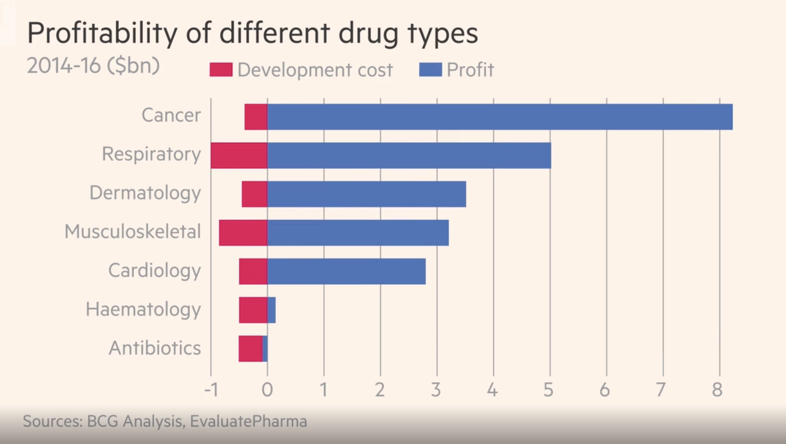

Why has antibiotic discovery faltered in recent years?
Scientific challenges
Discovering new antibiotics is inherently challenging. Antibiotics must attack multiple target bacterial species that change over time by developing resistance, and must reach effective concentrations in multiple body compartments.2 The discoverer of a new antibiotic must guess what resistance problems will be a problem in 10 years, and bring drugs to market to overcome these challenges. This flexibility and risk is not encountered in other therapeutic areas such as hypertension, diabetes, hyperglycemia, or Alzheimer’s disease where the drugs bind to one specific target. Even for cancer chemotherapy, which develops resistance to therapy, the mechanisms leading to resistance are not transmissible to other cancers or patients. Antibiotics must also be remarkabley non-toxic, as their daily dosages often measured in grams are often higher that for other pharmaceutics measured in milligrams.
Nearly all of the antibiotics used today belong to classes of drugs discovered before 1970. They are products of a “golden age” of antibiotic discovery from 1945-1965, which screened natural products from soil streptomyces and fungi. This discovery approach hit the law of diminishing returns by the 1960’s with the same classes being repeatably rediscovered.2 Put simply, the low-hanging fruit for new antibiotic discovery has already been picked. Since 1970, the only new antibiotic classes to reach the marked are the oxazolidinediones (i.e. linezolid discovered in 1978 launched in 2000) and lipopeptides (discovered in 1986 launched in 2003).
Most advances in antibiotics since the 1970s have come through improvements of existing antibiotic classes yielding analogues with increased potency and greater ability to evade existing resistance. However, over time this approach has become more difficult with the emergence of more potent resistance mechanisms that affect multiple antibiotic classes.
Given the the limits of existing strategies of screening soil organisms, the pharmaceutical industry turned to genomics-based high-throughput antibiotic discovery strategies with considerable enthusiasm in the 1990s.2 This discovery strategy used genomic sequence data from several target bacterial pathogens to identify conserved genes encoding targets not found in mammalian cells, and then ran high-throughput inhibition screens of existing chemical compound libraries to identify “druggable” molecules for these identified targets.
Despite early enthusiasm and huge financial investments by many pharmaceutical companies, very few potential new antibiotic targets were identified and even fewer drugs entered into clinical development. An example of the scientific challenge is illustrated by experience of SmithKline Beecham (later purchased by Glaxo Smith Kline-one of the few large pharmaceutical companies still involved in antibiotic discovery (inset box). Indeed, only four major pharmaceutical companies still have active antibiotic research programmes.
The disappointment of genomics: From 1995 to 2002, SmithKline Beecham (now part of GlaxoSmithKline (GSK) identified 300 potential targets and ran 67 high-throughput screens, each of 260000 –530000 compounds. Sixteen screens led to ‘hits’—meaning compounds that bound selectively to a target giving a reproducible positive signal in the assays—and five of these translated into ‘lead’ compounds. Of the five corresponding targets, two (FabI9 and Mrs) were not universally essential or conserved, meaning that they could not form the targets of broadspectrum antibiotics, and it proved impossible to incorporate ‘drug-like properties’ into molecules that bound two others. The final target identified was peptide deformylase, for which GSK now has a molecule (GSK 1322322) in Phase II trials, although this did not come from high-throughput screening. This performance appears typical of other companies that followed the genomics strategy. Thus, 20 years after its advent, no antibiotic developed by this approach has reached the market.3
Antibiotic regulatory hurdles
The goal of regulatory bodies such as the U.S. Food and Drug Administration (FDA), the European Medicines Agency (EMA), and the African Medicines Agency (AMA) is to review the potential benefits and risks to ensure that new drugs that make it to market are both safe and effective for patients in need. Still, a drug that gains FDA approval may give pause to European reviewers, despite having reviewed the same evidence as their American counterparts, and vice versa. Both the FDA and the EMA and AMA have distinct processes with different methods of endpoint evaluation, and individual comfort levels with risk. Other countries, such as India and China and many LMICs have their own processes for drug registration and approval and may require additional studies in populations of patients from their countries prior to approval. Therefore, if a new antibiotic that is effective for treating MDR pathogens is approved in one country, there is no guarantee that the drug will be favourable reviewed or avaiable in other countries.
Less than 10% of LMICs have access to “newly- approved” antibiotics within 10 years of availability, due to low probability expectation4. Indeed, The majority of the world’s annual 5.7 million antibiotic-treatable deaths occur in LMICs where the mortality burden from treatable bacterial infections far exceeds the estimated annual 700,000 deaths from antibiotic-resistant infections.5However, even among HIC, patient access to new antibacterials is limited in countries such as Canada, Japan, and many European countries.6. Companies appear to eschew antibacterial markets not offering attractive commercial prospects, which are almost all markets currently. If truly innovative antibacterials, like those identified by WHO, cannot find profitable markets.
LMICs with limited drug regulatory capacity may loose control of antibiotic distribution. As a result, some antibiotics that should be reserved as last-line treatment options are sold without a prescription. Limited regulatory capacity may also lead to rampant availability of sub-standard and falsified antibiotic products, which further promote the emergence of antibiotic-resistant pathogens.

Figure 2. Pathway from drug discovery to regulatory approval and estimated costs. ADMET- studies to document drug absorption, distribution, metabolism and elimination, and toxicity in animals. PK/PD pharmacokinetic/ pharmacodynamic relationships- i.e. dose response and toxicity relationships from animals.
A company seeking regulatory approval to sell a new prescription antibiotic must complete a five-step process: discovery/concept, preclinical research (animal testing), clinical research, regulatory review, and post-market safety monitoring. The cost to achieve this regulatory approval for antibiotics has been estimated between 1-1-5 billion dollars.7 The two most expensive components for antibiotics are the drug discovery (due to the higher failure rate) and clinical trials. Current guidance published by the US Food and Drug Administration (FDA) and the European Medicines Agency (EMA) requires randomized controlled clinical trials to demonstrate the non-inferiority of the new antibiotic to established therapies. This has to be complemented by the enrolment of a large number of patients to support the marketing application (New Drug Application NDA or Marketing Authorization Application MAA, respectively) for 1 or more infection site–specific indication (e.g., complicated urinary tract infection or complicated intra-abdominal infection), based on the drug’s clinical efficacy and safety. The bacterial pathogens relevant to the indication listed in the prescribing information are a secondary consideration based on the spectrum of activity of the investigational antibiotic and the microbiological efficacy data extracted from the clinical trials.8 As a result, even if a new antibiotic is developed for a MDR pathogen, it is difficult to perform clinical studies and receive approval from the FDA or EMA for the treatment of a resistant infection.
Despite the high risk and high cost for development of a new antibiotic, the returns are relatively poor. Meanwhile, industry analysts estimate that the average revenue generated from an antibiotic’s sale is roughly $46 million per year.7. Therefore a key problem for antibiotics is that their development is not profitable. Companies are making more money from the sales of other drug classes, including immuno-oncology therapeutics, that antibiotic development projects compare poorly when management allocates capital.

Figure 3. Profitability of the antibiotic sector vs. other drug types. Source McKenna et al.9
Moreover, it is difficult for an antibiotic manufacturer to be able to precisely identify the small proportion of patients who both really need the antibiotic for a MDR pathogen and are willing to pay a high price for the drug. As noted by Ardal and colleges:10
The major challenge with antibiotics is profitability. As older antibiotics are still effective for treating most infections, the primary value of new antibiotics is to treat multidrug-resistant infections and provide a protective benefit against emerging pathogens. The duration of antibiotic treatment for individual patients is relatively short (for example, 1–2 weeks or up to 1 month), whereas the treatment for chronic conditions can be continuous over many years. Resistance is hastened by use, new antibiotics are stewarded as a last resort, which results in low unit sales. Whereas medicines for rare diseases have used high unit-pricing strategies to achieve profitability, these are often unavailable to antibiotic developers due to clinical trial design (it is difficult to demonstrate the superiority of new antibiotics as resistance is still relatively uncommon) and bundled hospital reimbursement structures (whereby hospitals are incentivized to prescribe lower-cost antibiotics). Large pharmaceutical companies have largely abandoned the market, accounting for only 4 of the 42 antibiotics currently under development.11Any investment in a new antibiotic is seen as a high-risk proposition, and consequently the returns expected by prospective investors are high to account for this risk premium. This in turn puts pressure on small and medium-sized enterprises (SMEs), as there is little chance that their candidate -antibiotics will be purchased by larger companies.
Enormous costs are incurred once an antibiotic is approved. Approval by regulatory agencies is usually contingent on performing many studies post approval (phase IV): pediatric dosing and safety studies, pharmacokinetic studies in special populations (i.e. elderly, obese, dialysis), pharmacovigelance (safety), development and validation of susceptibility testing technology, manufacturing and supply chain investments, anda 5-10 years commitment to monitor resistance through antimicrobial surveillance studies. Recouping these costs may be impossible for drugs with activity against MDR pathogens as many many countries and health systems will negotiate the lowest possible price for purchase and then (appropriately) restrict the use of the antibiotic to preserve its effectiveness- resulting in low sales. This is completely different from a scenario of a new “breakthrough” cancer therapy, where the drug will be immediately incorporated in treatment
Thus while the hight post-approval costs may be absorbable by large pharmaceutical companies with other profitable drug products in other therapeutic areas, they can put smaller companies out of business. As novel antibiotics are held in reserve for years, sales revenues are very low in the first 5–7 years. During this period, the company must pay for the high post-approval costs described above that for antibiotics cannot be covered through aggressive sales. For antibiotics, companies have no way to pay for them without positive net revenues in an environment that hinders their ability to raise additional funds. especially if the approved drug was developed for MDR pathogens as illustrated by the Archeogen company:
For further study: Achaogen first advanced plazomicin (Zemdri), a broad-spectrum aminoglycoside antibacterial, into the clinic in 2009. Despite initial plans to develop the drug as a much-needed new treatment for carbapenem-resistant Enterobacteriaceae (CRE) — which included drug-resistant Klebsiella species and Escherichia coli — a phase III trial that started in 2014 in this setting struggled to recruit patients. The company pivoted to initiate a phase III trial in complicated urinary tract infections (cUTIs) in 2016, and submitted the drug for FDA approval in this indication and in bloodstream infections in 2017. Although plazomicin was approved for cUTIs in 2018, the FDA rejected its use in the potentially more lucrative and important bloodstream infections despite evidence of improved outcomes in patients with carbapenem-resistant infections. An independent advisory committee also voted against approval in the bloodstream, noting that the efficacy signal came from a small study of just 28 patients. In the end, It spent 15 years and a billion dollars to win FDA approval for Zemdri, a drug for hard-to-treat UTIs. In July, the World Health Organization added plazomicin to its list of essential new medicines. Achaogen later filed for bankruptcy, less than a year after the FDA approved its lead product. See: Crises Looms in Antibiotics as Drug Makers Go Bankrupt. NY Times, December 25, 2019.